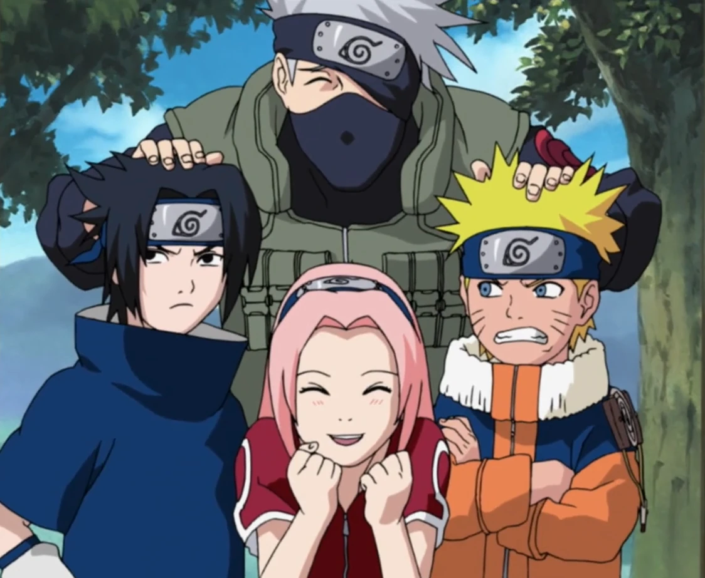

Le début d'une légende
Naruto Uzumaki est un jeune ninja turbulent qui rêve de devenir Hokage, le ninja le plus puissant et respecté de son village. Mais Naruto a un lourd secret : il est le réceptacle du démon renard à neuf queues qui a dévasté le village de Konoha 12 ans plus tôt.
Rejeté et méprisé par les habitants du village, Naruto va devoir prouver sa valeur en tant que ninja et se faire des amis précieux sur son chemin vers la reconnaissance.
